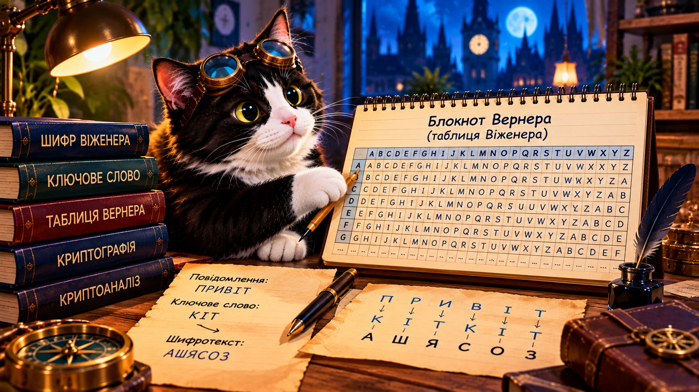

01 · Бітова майстерня Буча
Зашифруйте байт, побачте HEX і поверніть початкові дані.
Відкрити практикуЯк працює XOR і чому ключ не можна повторювати?
Буч допомагає волонтерам передавати повідомлення. Хтось пропонує двічі використати той самий секретний ключ. Чи безпечно це?
🎯 Розслідуйте, як XOR перетворює байти та чому повторення ключа розкриває зв’язок між повідомленнями.

XOR (⊕) порівнює біти: однакові дають 0, різні — 1. Наприклад, 01000001 ⊕ 00101010 = 01101011.
| A | B | A ⊕ B |
|---|---|---|
| 0 | 0 | 0 |
| 0 | 1 | 1 |
| 1 | 0 | 1 |
| 1 | 1 | 0 |
Натискайте біти повідомлення й ключа.
Повідомлення P
Ключ K
Ключ генерується криптографічним генератором браузера за наявності Web Crypto.
(P ⊕ K) ⊕ K = P. Застосування того самого ключа вдруге відновлює початковий байт. Це властивість операції, а не гарантія безпечності будь-якого XOR-шифру.
Гілберт Вернам працював над шифруванням телеграфних повідомлень. У бітовому одноразовому блокноті (OTP) кожен біт повідомлення поєднується з відповідним бітом секретного ключа: Cᵢ = Pᵢ ⊕ Kᵢ.
Ідеальна секретність можлива лише якщо ключ справді випадковий, не коротший за повідомлення, зберігається в таємниці та ніколи не використовується повторно.
OTP забезпечує секретність за цих умов, але сам по собі не засвідчує автора й не захищає від непомітної зміни повідомлення.
Якщо C₁ = P₁ ⊕ K і C₂ = P₂ ⊕ K, то C₁ ⊕ C₂ = P₁ ⊕ P₂. Ключ зникає з рівняння!
Якщо перше повідомлення відоме, друге можна відновити без ключа. Для українського тексту спершу кодуємо символи в UTF-8, а потім працюємо з байтами.
Зашифруйте байт, побачте HEX і поверніть початкові дані.
Відкрити практикуРозшифруйте 6B із ключем 2A та знайдіть ASCII-символ.
Відкрити практикуПобачте, що розкриває повторення ключа.
Відкрити практикуВідновіть другий байт без знання ключа.
Відкрити практикуСтворіть два короткі повідомлення однакової довжини. Для кожного використайте новий незалежний випадковий ключ відповідної довжини, зашифруйте, розшифруйте й порівняйте з небезпечним повторенням ключа. Поясніть висновок.
Перевірити знання у вебботі →